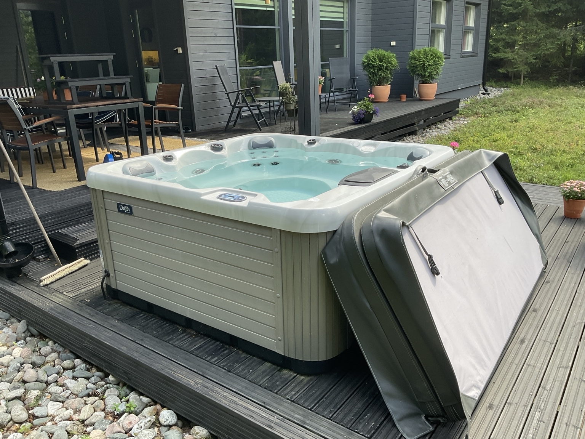

Markdown- ja GitHub-harjoitus
tämä dokumentti kokoaa opitut asiat askel askeleelta.
1 Markdown-syntaksi
Otsikot tehdään # risuaita-merkillä. Yksi risuaita on pääotsikko, kaksi risuaitaa on alaotsikko, kolme on sitä seuraava taso. Jätä välilyönti # merkin/merkkien ja otsikkotekstin väliin.
matoviiva näppiksellä
Aaltoviiva ~ kirjoitetaan suomalaisella Mac-näppäimistöllä näin:
Paina Option (⌥) + ¨ – ¨-näppäin sijaitsee Å-näppäimen oikealla puolella, Enter-näppäimen vieressä. Option-näppäin on välilyöntinäppäimen vieressä (siinä lukee ⌥ tai "alt"). Ruudulle ei ilmesty vielä mitään (tai näkyy himmeä ~) – paina sitten välilyöntiä, ja ~ ilmestyy.
Listat
Numeroimaton lista tehdään tavuviivalla rivin alussa:
- ensimmäinen asia
- toinen asia
- kolmas asia
- sisennetty alakohta (tab tai 4 spacea alkuun)
Numeroitu lista tehdään numerolla ja pisteellä
- ensimmäinen vaihe
- toinen vaihe
- kolmas vaihe
Yksi tärkeä sääntö vielä: jätä tyhjä rivi ennen listan alkua – muuten lista ei muotoidu oikein vaan jää osaksi edellistä kappaletta.
Kiva yksityiskohta: numeroiden ei tarvitse olla oikeassa järjestyksessä – vaikka kirjoittaisit joka riville 1., Markdown numeroi ne silti 1, 2, 3. Tämä helpottaa, kun lisäät kohtia listan keskelle.
Tekstin korostukset
Teksti voi olla kursivoitua yhdellä tähdellä sanan alussa ja lopussa tai lihavoitua kahdella tähdellä sanan alussa ja lopussa.
Koodi ja komennot merkitään takahipsuilla ( ` löytyy + merkin ja backspacen välistä).
eli: ´koodi ´ mutta hipsujen ja sanan välissä ei saa olla välilyöntiä.
Linkit
Linkki tehdään hakasulkeilla ja kaarisulkeilla:
Linkkitekstin hakasulkeisiin :
[Noppa-Yatzy pelitaulukko]
ja urlin kaarisulkeisiin: (https://jukkarouhe.github.io/yatzy/)
Kirjoitetaan peräkkäin ilman välilyöntiä jolloin saadaan nätti linkki:
Kuvat
Kuva lisätään kuten linkki, mutta eteen tulee huutomerkki:
![poreallas kansi auki] (kuvat/poreallas-kansi-auki.JPEG)
(ja yhteenkirjoitettuna ilman välilyöntiä)

Polku kuvat/kuvan-nimi.jpg on suhteellinen polku: se tarkoittaa "tämän .md-tiedoston sijainnista katsottuna kuvat-kansiossa oleva tiedosto". Suhteelliset polut ovat tärkeitä, koska ne toimivat sellaisenaan myös GitHubissa ja MkDocs-sivustolla – toisin kuin koneesi absoluuttiset polut (esim. /Users/...).
Koodilohkot
Yksittäinen komento merkitään takahipsuilla keskelle tekstiä,
esimerkiksi komento ls -la listaa myös piilotiedostot.
Monirivinen koodilohko tehdään kolmella takahipsulla siten että
ensimmäisellä rivillä on ```
ja koodilohkon lopuksi viimeisellä rivillä on taas ``` jolloin saadaan muotoilu:
mkdir kuvat
cd kuvat
ls
Kolmen takahipsun perään voi lisätä kielen nimen, esim bash jolloin koodi saa värityksen:
cd ~/Projects/md-harjoitus
git status
ls la
Selitys: Aiemmin opit yksittäisen takahipsun tekstin keskellä. Koodilohko taas alkaa rivillä, jolla on kolme takahipsua ``` ja päättyy samanlaiseen riviin. Kaikki niiden välissä näytetään sellaisenaan harmaalla pohjalla – Markdown-merkit eivät vaikuta lohkon sisällä. Takahipsu tehtiin siis Shift + ´ ja välilyönti; kolme peräkkäin vaatii saman kolmesti (tai kikka: paina Shift + ´ kolme kertaa peräkkäin ja lopuksi välilyönti – saat kolme hipsua kerralla).
Kielen nimi avaavan rivin perässä (esim. ```bash) kertoo, millä kielellä koodi on kirjoitettu, jolloin editori ja GitHub värittävät sen luettavammaksi. Terminaalikomennoille käytetään nimeä bash, Python-koodille python ja niin edelleen.
Taulukot
Taulukot kirjoitetaan kuten allaoleva esimerkki näyttää mutta ilman tyhjiä rivejä otsikon ja toisten rivien välissä:
|Komento|Selitys|
|---|---|
|ls |listaa kansion sisällön|
|cd|vaihtaa kansiota|
|mkdir|luo uuden kansion|
Kun tyhjiä rivejä ei ole, taulukko näyttää tältä:
| Komento | Selitys |
|---|---|
| ls | listaa kansion sisällön |
| cd | vaihtaa kansiota |
| mkdir | luo uuden kansion |
Selitys: taulukon sarakkeet erotetaan pystyviivalla |. Ensimmäinen rivi on otsikkorivi, toinen rivi viivoineen |---|---| erottaa otsikot sisällöstä (se on pakollinen), ja loput rivit ovat taulukon sisältöä. Pystyviiva tehdään suomalaisella Mac-näppäimistöllä Option (⌥) + 7. Sarakkeiden leveyksien ei tarvitse olla siistejä tai kohdakkain – Markdown tasaa taulukon automaattisesti.
Peruskomennot terminaalissa
Macin terminaali ei aja DOSia vaan Unix-pohjaista komentotulkkia (Macissa oletuksena zsh-niminen tulkki). Komennot ovat siksi eri nimisiä, vaikka tekevät samoja asioita. Tässä muutama vastinpari, jotka tunnistat:
| DOS | Mac/Unix | Mitä tekee |
|---|---|---|
| dir | ls | listaa kansion sisällön |
| cd | cd | vaihtaa kansiota (sama!) |
| md / mkdir | mkdir | luo kansion |
| copy | cp | kopioi tiedoston |
| del | rm | poistaa tiedoston |
| type | cat | näyttää tiedoston sisällön |
| cls | clear | tyhjentää ruudun |
Pari muuta eroa: Unix käyttää kauttaviivaa / polkujen erottimena, kun DOS käytti kenoviivaa . Ja Unixissa isot ja pienet kirjaimet ovat merkitseviä – Ohje.md ja ohje.md ovat eri tiedostoja, mikä DOSissa ei pitänyt paikkaansa.
2 Git paikallisesti
Kahtiajako on Gitin ydinajatus: paikallinen työskentely (add, commit) ja synkronointi etäpalvelimelle (push, pull) ovat erillisiä toimintoja. Tässä käydään läpi paikallinen osuus.
1 Kohdekansio
Työskentelet Terminaalissa, siirry aluksi projektikansioon:
cd ~/Projects/md-harjoitus
2 Alusta Git-repositorio:
git init
Mitä tapahtuu: init (initialize) luo kansioon piilotetun .git-alikansion, johon Git alkaa tallentaa kaikkien tiedostojen muutoshistoriaa (versioita). Kansiostasi tuli juuri repositorio eli "repo". Tämä tehdään vain kerran per projekti. Näet piilokansion halutessasi komennolla ls -la (tuo -a näyttää piilotiedostot – kuten DOSin dir /a!).
VS Code : repositorion alustus
Repositorion alustus (´git init´): Avaa kansio VS Codessa (File → Open Folder). Paina vasemman reunan Source Control -kuvaketta (Cmd + Shift + G). Jos kansio ei ole vielä Git-repo, paneelissa näkyy iso sininen nappi Initialize Repository – sen painaminen tekee täsmälleen saman kuin ´git init´.
3 Katso tilanne
git status
Tämä on Gitin tärkein peruskomento – se kertoo aina, mitä repossa on meneillään. Nyt sen pitäisi listata punaisella "Untracked files" -otsikon alla ohje.md ja kuvat/-kansio: Git näkee tiedostot, mutta ei vielä seuraa niitä.
Sama VS Codessa: katso vasemman reunan Source Control -kuvaketta (kolme palloa viivoilla yhdistettynä, Cmd + Shift + G). Näet samat tiedostot listassa merkinnällä U (Untracked). VS Code huomasi git init-komennon automaattisesti.
4 tiedostojen lisääminen seurantaan ja commit
Commit tehdään kahdessa vaiheessa. Ensin valitaan mukaan otettavat tiedostot:
git add .
Selitys: add siirtää tiedostot valmistelualueelle (staging area) eli "seuraavaan 'snapshottiin' (versiotallennukseen) mukaan tulevat editoidut tiedostot". Piste tarkoittaa "kaikki tämän kansion tiedostot". Aja git status uudelleen – tiedostot näkyvät nyt vihreällä, valmiina commitoitavaksi.
Voit muokata vaikka viittä tiedostoa, mutta ottaa commitiin mukaan vain kaksi niistä (git add tiedosto1.md tiedosto2.md) ja jättää loput seuraavaan committiin.
Sitten itse commit:
git commit -m "Ensimmäinen versio: Markdown-perusteet dokumentoitu"
Selitys: commit tallentaa valmistelualueen sisällön pysyväksi tilannekuvaksi(versioksi) historiaan tietokoneen projektikansion piilossa olevaan .git hakemistoon. -m (message) antaa commitille viestin, joka kuvaa mitä tehtiin – kirjoita viestit aina niin, että ymmärrät ne vielä kuukausienkin päästä. Komennolla git logvoi katsoa kaikki aiemmat commitit ja tarvittaessa palata vanhempaan versioon (committiin). Mitään ei tässä vaiheessa ole siirretty GitHubiin.
Tämä kahtiajako on Gitin ydinajatus: paikallinen työskentely (add, commit) ja synkronointi etäpalvelimelle (push, pull) ovat erillisiä toimintoja. Voit tehdä vaikka kymmenen commitia junassa ilman nettiyhteyttä ja työntää ne kaikki kerralla GitHubiin myöhemmin.
VS Code : Tiedostojen lisäys ja commit
Sama VS Codessa: Source Control -paneelissa paina tiedoston vieressä +-merkkiä (= git add), kirjoita viesti yläreunan tekstikenttään ja paina Commit-nappia.
Tiedostojen lisäys ja commit (add + commit): Muutetut tiedostot ilmestyvät Source Control -paneeliin Changes-listaan. Vie hiiri tiedoston päälle ja paina + (Stage Changes) – tämä on git add. Tiedosto siirtyy Staged Changes -listaan. Kirjoita commit-viesti yläreunan tekstikenttään ja paina Commit. Vinkki: jos painat Commit ilman että mitään on stagettu, VS Code kysyy haluatko commitoida kaikki muutokset kerralla – se vastaa komentoa git add . + commit.
5 Katso historia
git log komento Terminaalissa: Näet juuri tekemäsi commitin: tekijän, ajan, viestin ja commitin yksilöivän tunnisteen (pitkä merkkijono). Poistu näkymästä painamalla q. Tiiviimpi muoto: git log --oneline.
3 Git --> GitHub
Luodaan repositori GitHubiin
Tämä tehdään selaimessa:
- Mene osoitteeseen github.com ja kirjaudu sisään (tunnus jukkarouhe)
- Paina oikean yläkulman +-merkkiä ja valitse New repository
- Täytä lomake:
- Repository name: md-harjoitus (sama nimi kuin paikallisella kansiolla – ei pakollista, mutta selkeää)
- Description: vapaaehtoinen, esim. "Markdown- ja Git-harjoitusprojekti"
- Public / Private: valitse Public, jos dokumentaatio saa näkyä kaikille – tämä on myös GitHub Pages -julkaisun (vaihe 5) kannalta helpoin valinta ilmaisella tilillä
- Tärkeää: älä ruksaa kohtia "Add a README", "Add .gitignore" tai "Choose a license" – repositorion pitää syntyä tyhjänä, koska sisältö tulee sinun koneeltasi. Jos GitHub loisi sinne valmiiksi tiedostoja, historiat menisivät ristiin.
- Paina Create repository
GitHub näyttää nyt ohjesivun, jossa on valmiita komentoja. Käytetään niistä (lokaalisti tietokoneella) keskimmäistä vaihtoehtoa ("push an existing repository from the command line"), mutta käydään komennot läpi itse ymmärtäen.
2 Kytketään paikallinen repo GitHubiin (remote)
Terminaalissa projektikansiossa (tarkista siirtymällä cd ~/Projects/md-harjoitus):
git remote add origin git@github.com:jukkarouhe/md-harjoitus.git
Selitys: remote tarkoittaa etärepositoriota eli paikallisen repon "kaveria" verkossa. add origin lisää etärepon nimellä origin – se on vakiintunut nimi ensisijaiselle etärepolle (nimi voisi olla mikä vain, mutta origin on käytäntö, jota kaikki noudattavat). Osoite git@github.com:... on SSH-muotoinen osoite, eli yhteys todennetaan SSH-avaimellasi – salasanaa ei kysytä.
Tarkista toimiko paikallisen repon kytkentä GitHubiin komennolla
git remote -v
Terminaalin pitäisi tulostaa origin kaksi kertaa (fetch ja push):
jukkarouhe@Jukkas-MacBook-Pro md-harjoitus % git remote -v
origin git@github.com:jukkarouhe/md-harjoitus.git (fetch)
origin git@github.com:jukkarouhe/md-harjoitus.git (push)
jukkarouhe@Jukkas-MacBook-Pro md-harjoitus %
VS Code: Remote-kytkentä
Remote-kytkentä: Source Control -paneelin oikean yläkulman …-valikko → Remote → Add Remote → liitä osoite git@github.com:jukkarouhe/md-harjoitus.git → anna nimeksi origin.
3 Haaran nimeäminen ja commitin työntö GitHubiin
Ensin yhtenäistetään haaran nimi. Muistat ehkä git init -komennon vihjeen "master"-nimestä – GitHubin nykykäytäntö on main, joten nimetään paikallinen haara sen mukaiseksi:
git branch -M main
Selitys: branch -M main nimeää nykyisen haaran uudelleen nimellä main. (Haarat käsitellään syvemmin myöhemmin – tässä vaiheessa riittää tietää, että main on projektin päälinja, se aikajana jolle commitisi ovat tallentuneet.)
Sitten itse työntö:
git push -u origin main
Selitys: push lähettää paikalliset commitit etärepoon. origin main tarkoittaa "origin-nimiseen etärepoon, main-haaraan". Valitsin -u (upstream) tekee kytkennän muistiin: jatkossa pelkkä git push riittää, koska Git muistaa minne tämän haaran commitit kuuluvat. Tämä -u tarvitaan siis vain ensimmäisellä kerralla.
Jos SSH-yhteys kysyy ensimmäisellä kerralla "Are you sure you want to continue connecting (yes/no)?", vastaa yes – se on normaali varmistus, kun koneesi ottaa yhteyttä GitHubiin ensimmäistä kertaa.
VS Code : push ja pull ja historia (git log)
Sama VS Codessa: Source Control -paneelin ...-valikosta (siis kolmen pisteen kautta avautuvasta drop-down valikosta source control osion yläpalkista) löytyvät Remote → Add Remote ja Push. Ensimmäisen pushin jälkeen VS Coden alapalkkiin ilmestyy myös synkronointikuvake (nuolet ympyränä), joka hoitaa push/pull-toiminnot yhdellä klikkauksella.
Push ja pull: Ensimmäinen työntö: …-valikko → Push (VS Code kysyy tarvittaessa mihin haaraan). Jatkossa helpoin on alapalkin synkronointikuvake (nuolet ympyränä, haaran nimen "main" vieressä): yksi klikkaus tekee sekä pullin että pushin. Kuvakkeen vieressä näkyvät numerot kertovat odottavista commiteista: ↓ tulossa GitHubista, ↑ lähdössä sinne.
Historia (git log): VS Codessa on sisäänrakennettu Timeline-näkymä: avaa ohje.md ja katso vasemman paneelin alaosasta Timeline-osio – siinä näkyvät tiedoston commitit aikajärjestyksessä, ja klikkaamalla näet mitä kussakin muutettiin.
4 Onnistuminen tarkistus
Päivitä selaimessa repositoriosi sivu (github.com/jukkarouhe/md-harjoitus). Sinun pitäisi nähdä ohje.md ja kuvat-kansio siellä – ja hienona yksityiskohtana GitHub näyttää ohje.md:n sisällön valmiiksi muotoiltuna suoraan reposivulla, koska Markdown on GitHubin äidinkieltä. Voit myös klikata commit-historiaa (kellokuvake tai "commits") ja nähdä tekemäsi commitit viesteineen.
4 muokkaa → tarkista → commitoi → työnnä
Muutoksien tekeminen ja tarkastaminen
Tee VS Codessa muokkauksia tiedostoon (tarpeen tullen alustus, valitse committoitavat muokatus tiedostot + commit, push/pull, Timeline). Ennen committia on hyvä tapa katsoa Terminaalissa, mikä muuttui. Komennot Terminaalissa ovat:
git status
git diff
Selitys: status kertoo mitkä tiedostot muuttuivat, diff näyttää rivi riviltä mitä muuttui – poistetut rivit miinuksella (punaisella), lisätyt plussalla (vihreällä). Poistu diff-näkymästä painamalla q (kuten git logissa).
VS Codessa: Source Control -paneelissa klikkaa muuttunutta tiedostoa – VS Code avaa rinnakkaisnäkymän, jossa vasemmalla on edellinen commitoitu versio ja oikealla nykyinen, muutokset värein korostettuna. Tämä on selvästi diff-komentoa havainnollisempi tapa. Erot näyttävän näkymän saat pois klikkaamalla ylälaidasta kyseisen tab-in kiinni(pois).
Committoiminen
Terminaalissa:
git add ohje.md
git commit -m "Lisätty VS Coden ohjeistusta"
huom, tällä komennolla lisättiin vain ohje.md koska ei käytetty pistettä add komennon jälkeen.
VS Codessa: Source Control → ohje.md:n vieressä + (Stage Changes) → kirjoita viesti kenttään → Commit.
Työntäminen GitHubiin
Terminaalissa:
git push
pelkkä pushriittää nyt, koska -ukytkentä tehtiin ensimmäisellä kerralla.
VS Codessa: klikkaa alapalkin synkronointikuvaketta (nuolet ympyränä, "main"-tekstin vieressä). Se ajaa sekä pullin että pushin. Käy varmistamassa selaimessa, että uusi osio näkyy GitHubissa.
Pelkkä Pull - miksi joskus pitää hakea muutoksia
´git pull``
Selitys: pull hakee GitHubista commitit, joita koneellasi ei vielä ole. Yksin yhdellä koneella työskennellessä se tuntuu turhalta – mutta se muuttuu tärkeäksi heti, jos (a) muokkaat tiedostoja suoraan GitHubin selainkäyttöliittymässä, (b) otat käyttöön toisen tietokoneen, tai (c) projektiin tulee toinen tekijä. Hyvä rutiini: aloita työskentelysessio aina git pull -komennolla (tai VS Coden synkronointikuvakkeella) – näin kone on varmasti ajan tasalla, eikä ristiriitoja synny.
Yleisimmät ongelmatilanteet ja ratkaisut
| Tilanne | Ratkaisu |
|---|---|
| Push hylätään: "rejected... remote contains work" | GitHubissa on committeja joita koneelasi ei ole. Aja git pullensin, sitten git pushuudelleen |
| Commit viesti unohtui ja avautui outo editori | Kirjoita viesti, paina Esc ja kirjoita :wq ja Enter (vim-editori). Jatkossa muista -m "viesti" |
| Väärä tiedosto stagessa (=valittuna committiin) | git restore --staged tiedosto.md poistaa stagesta (muutokset säilyvät). VS Codessa: tiedoston vieressä - (unstage) |
| Muutokset halutaan perua kokonaan | git restore tiedosto.mdpalauttaa viimeisimmän commitin version. VS Codessa: tiedoston vieressä ↩ (Discard Changes). Varo: muutokset katoavat oikeasti |
| /Ei muistikuvaa mitä tehty | git statuskertoo aina tilanteen. VS Codessa: Source Control -paneeli |
5 MkDocs ja julkaisu nettiin
Julkaisuun on kaksi reittiä, ja tässä kannattaa hetki miettiä:
Pikatapa: repositorion asetuksista (Settings → Pages) voi kytkeä Pagesin päälle suoraan main-haarasta, jolloin GitHub tekee md-tiedostoista yksinkertaiset sivut. Toimii, mutta lopputulos on vaatimaton eikä vastaa tavoitettamme.
Suunniteltu tapa: rakennetaan sivusto MkDocsilla ja Material-teemalla. Silloin saat hakutoiminnon, navigaation ja ammattimaisen ulkoasun, ja julkaisu tapahtuu komennolla mkdocs gh-deploy, joka hoitaa GitHub Pages -kytkennän puolestasi automaattisesti.
Tarkistetaan MkDocs asennus
Terminaalissa projektikansiossa (cd ~/Projects/md-harjoitus):
mkdocs --versions
Jos komento ei löydä MkDocs asennusta, todennäköisesti sitä ei ole Terminaalin hakupolussa (PATH). Toinen mahdollisuus on että MkDocs on asennettu virtuaaliympäristöön (venv), joka pitää aktivoida uudelleen.
Kokeile Termonaalissa näitä komentoja järjestyksessä ja katso mikä tuottaa tulosta:
python3 -m mkdocs --version
Selitys: tämä käynnistää MkDocsin Pythonin kautta ohittaen PATH-ongelman. Jos tämä tulostaa version (1.6.1), paketti on asennettu ja kyse on vain hakupolusta – helppo korjata.
Jos tuli virhe ("No module named mkdocs"), tarkista näkyykö paketti pip-listauksessa:
`pip3 list | grep -i mkdocs``
Selitys: pip3 list listaa kaikki asennetut Python-paketit, ja grep -i mkdocs suodattaa listasta rivit, joissa lukee mkdocs (-i = isot/pienet kirjaimet samanarvoisia). Putkimerkki | (Option + 7) ohjaa edellisen komennon tulosteen seuraavalle – tämäkin konsepti saattaa olla DOS-ajoilta tuttu.
Jos asennusta ei löydy, se on mahdollisesti asennettu virtuaaliympäristöön jonkun aiemman projektin yhteydessä (porealtaan huoltokansio?).
Etsitään virtuaaliympäristö
Aja Terminaalissa (missä tahansa kansiossa):
find ~/Projects -name "pyvenv.cfg"
- Jos venv löytyi: aktivoidaan se väliaikaisesti, tarkistetaan sisältääkö se MkDocsin, ja päätetään haluatko käyttää samaa venviä myös tässä projektissa vai luoda tälle oma erillinen (suositeltavampi – projektit kannattaa pitää siististi erillään toisistaan)
- Jos ei löytynyt mitään: paketit asennettiin ehkä suoraan globaaliin Pythoniin, mutta eri Python-versiolla kuin nykyinen
python3osoittaa (huomasitko tulosteessa polun/opt/homebrew/opt/python@3.14/? – jos asennus tehtiin esim. Python 3.12:lla, paketit eivät näy 3.14:n listassa). Tässä tapauksessa selvitetään mitä Python-versioita koneellasi on.
Suositeltu tapa: luodaan tälle projektille oma virtuaaliympäristö. Tämä on muutenkin Python-projekteissa suositeltu käytäntö, koska jokainen projekti pysyy omissa paketeissaan sekoittamatta muita.
Miksi virtuaaliympäristö ylipäätään?
Venv on kuin erillinen, eristetty "laatikko" Python-paketeille per projekti. Ilman sitä kaikki paketit menisivät yhteen isoon kasaan koko koneelle, ja eri projektien versiotarpeet voisivat riidellä keskenään. Venv ratkaisee tämän: kun se on aktivoituna, pip install asentaa paketit vain siihen kansioon, ei koko koneelle.
Virtuaaliympäristön luominen
Terminaalissa , projektikansiossa (cd ~/Projects/md-harjoitus):
python3 -m venv .venv
Selitys: python3 -m venv on Pythonin sisäänrakennettu työkalu venvien luontiin. .venv on luotavan kansion nimi (piste alussa piilottaa sen tavallisesta listauksesta – vakiintunut käytäntö). Tämä luo projektikansioon .venv-nimisen alikansion, joka sisältää oman kopion Pythonista ja tyhjän pip-asennuksen.
Virtuaaliympäristön aktivoiminen
source .venv/bin/activate
Selitys: source ajaa skriptin nykyisessä terminaali-istunnossa (eikä uudessa aliprosessissa, kuten tavallinen komennon ajo tekisi) – tämä on välttämätöntä, jotta aktivointi jää voimaan. Onnistuessaan terminaalin komentorivin alkuun ilmestyy (.venv), joka kertoo: "olet nyt tämän venvin sisällä, kaikki pip- ja python-komennot koskevat vain sitä."
Asennetaan paketit requirements.txt:stä
Projektisi dokumentaatiossa on jo requirements.txt, joka listaa tarvittavat paketit. Jos tiedosto on toisen Projektin kansiossa kopioi se tämän Projektin kansioon ajamalla:
cp ~/Projects/poreallas/requirements.txt ~/Projects/md-harjoitus/requirements.txt
Selitys: cp (copy) kopioi tiedoston – ensimmäinen polku on lähde, toinen kohde. Alkuperäinen tiedosto poreallas-kansiossa säilyy koskemattomana.
Tämän jälkeen asennetaan paketit
pip install -r requirements.txt
koska nyt tiedosto löytyy oikeasta paikasta.
Pieni lisähuomio myöhempää varten: koska requirements.txt on nyt osa tätä projektia, se kannattaa myös committoida Gitiin yhdessä mkdocs.yml:n kanssa – se on nimenomaan sellainen tiedosto, joka pitää viedä GitHubiin (toisin kuin .venv-kansio), jotta projekti on kenen tahansa pystytettävissä uudelleen.
Tarkista asennus
Aja Terminaalissa
mkdocs --version
Nyt komento löytyy, koska aktiivinen venv lisäsi oman bin-kansionsa hakupolun alkuun.
Tärkeä muistisääntö: venv pitää aktivoida jokaisessa uudessa terminaali-istunnossa erikseen (komento source .venv/bin/activate) ennen kuin mkdocs-komennot toimivat. Jos suljet terminaalin ja avaat uuden, (.venv) ei enää näy eikä mkdocs löydy – se ei ole virhe, vaan pitää vain aktivoida uudelleen. Pois venvistä pääsee komennolla deactivate.
Vinkki myöhempää varten: .venv-kansiota ei koskaan viedä Gitiin (se on iso ja koneriippuvainen) – siksi juuri requirements.txt on olemassa: sen avulla kuka tahansa voi pystyttää saman ympäristön uudelleen yhdellä komennolla.
Järjestetään kansiot MkDocsin tapaan
Nyt kun MkDocs toimii, tehdään seuraava siirto:
mkdir docs
git mv ohje.md docs/index.md
git mv kuvat docs/kuvat
Muista tarkistaa avoimet välilehdet git mv:n jälkeen
Kun siirrät tai nimeät tiedoston uudelleen terminaalissa
(git mv vanha.md uusi.md) samalla kun tiedosto on auki VS Codessa, editorin välilehti ei aina päivity automaattisesti.
Varmuuden vuoksi git mv -komennon jälkeen:
1. Katso VS Coden välilehden yläreunasta täsmällinen polku
(voit tarkistaa hiiren ollessa välilehden päällä, tai
avaamalla tiedosto uudelleen tiedostopaneelista)
2. Jos epäilyttää, sulje vanha välilehti kokonaan (Cmd + W)
ja avaa tiedosto uudelleen tiedostopaneelista oikeasta
sijainnista
3. Aja git status siirron jälkeen ja tarkista, että vanha
tiedostonimi EI näy "untracked"-listassa
Luodaan mkdocs.yml
Luo VS Codessa projektin juureen (samaan tasoon kuin docs-kansio, ei sen sisään) tiedosto mkdocs.yml ja sitten kirjoita tiedoston ensimmäiselle riville:
site_name: Markdown- ja GitHub-harjoitus
Huom. site_name jälkeen täytyy olla yksi välilyönti.
Käynnistetään esikatsely
Terminaalissa: mkdocs serve
Avaa selaimessa http://localhost:8000. Pysäytys Terminaalissa: Ctrl + C.
gitignore - jätetään .venv ja .DS_Store pois Gitistä
Ennen kuin committoidaan, tehdään tärkeä siisteystoimenpide: estetään .venv-kansion joutuminen vahingossa GitHubiin (se on iso, koneriippuvainen, ja jokainen pystyttää oman versionsa requirements.txt:n avulla).
Luo VS Codessa projektin juureen tiedosto .gitignore ja kirjoita sisään:
.venv/
.DS_Store
Selitys: .gitignore on tiedosto, joka listaa polut, joita Git ei koskaan seuraa – ne eivät näy git status-listauksessa eivätkä päädy committeihin, vaikka ajaisit git add .. Tämä on tärkeä tiedosto jatkossa aina kun projektissa on koneriippuvaisia tai isoja kansioita.
Varmista git status-komennolla, että .venv eikä .DS_Store eivät näy listassa lainkaan (requirements.txt, mkdocs.yml, .gitignore ja docs-kansion siirrot sen sijaan näkyvät).
Vielä puuttuu viimeinen ´git add´ -komento, joka nostaa loput muutokset stagelle.
Terminaalissa:
git add docs/index.md mkdocs.yml requirements.txt .gitignore
Tarkista uudelleen:
git status
Nyt kaiken pitäisi olla "Changes to be committed" -listassa, eikä mitään "Untracked" tai "Changes not staged" -kohdissa. Jos näyttää siltä, committoi:
git commit -m "MkDocs-projektirakenne: docs-kansio, mkdocs.yml, .gitignore"
Muokataan mkdocs.yml
Askel 1: Avaa mkdocs.yml VS Codessa ja lisää teema-asetus olemassa olevan rivin jatkoksi:
site_name: Markdown- ja GitHub-harjoitus
theme:
name: material
Selitys: theme: on uusi avain, jonka alle tulee sisennettynä (kaksi välilyöntiä, ei tabulaattoria – YAML on tarkka sisennyksistä) name: material. Tämä kertoo MkDocsille: "älä käytä sisäänrakennettua oletusteemaa, vaan asennettua Material-pakettia". Tallenna (Cmd + S).
Tärkeä YAML-huomio: sisennys pitää olla täsmälleen sama koko tiedostossa (esim. aina 2 välilyöntiä per taso) – YAML käyttää sisennystä rakenteen merkitsemiseen, ei sulkeita kuten monissa muissa formaateissa. Jos VS Code automaattisesti muuttaa sisennyksen tabulaattoriksi, MkDocs saattaa valittaa – tarkista tarvittaessa.
Käynnistä esikatselu uudelleen
Jos mkdocs serve on yhä käynnissä edellisestä kerrasta, se päivittyy automaattisesti heti kun tallensit mkdocs.yml:n – terminaaliin ilmestyy rivi tyyliin "Detected file changes, rebuilding". Jos palvelin ei ole käynnissä, käynnistä se:
mkdocs serve
Päivitä selain (localhost:8000). Näet heti eron: siisti navigaatiopalkki vasemmalla, hakukenttä ylhäällä, siniset korostusvärit ja modernimpi typografia.
Askel 3: Muutama hyödyllinen lisäasetus (valinnainen mutta suositeltava)
Voit laajentaa mkdocs.yml:ää näillä hyvillä perusasetuksilla:
yaml site_name: Markdown- ja GitHub-harjoitus theme: name: material language: fi features: - navigation.instant - search.suggest
Selitys: language: fi vaihtaa teeman valmiit tekstit (kuten hakukentän placeholder-tekstin) suomeksi. features-lista ottaa käyttöön lisäominaisuuksia: navigation.instant tekee sivujen välillä siirtymisestä nopeampaa (ei koko sivun uudelleenlatausta), search.suggest näyttää hakuehdotuksia kirjoittaessa. Nämä ovat vain kaksi esimerkkiä kymmenistä saatavilla olevista – Material-teemalla on paljon säädettävää, johon voidaan palata myöhemmin tarpeen mukaan.
Tallenna ja katso selaimesta, että hakukentän teksti on nyt suomeksi ("Hae").
Vaihtoehtoisia teemoja mkdocs.yml:n theme: name: -kohtaan
MkDocsissa on kaksi sisäänrakennettua teemaa (eivät vaadi erillistä asennusta) ja lukuisia kolmannen osapuolen teemoja (vaativat oman pip install -asennuksensa, kuten Material aikanaan):
| Teema | Asennus | Kuvaus |
|---|---|---|
| mkdocs | sisäänrakennettu | MkDocsin oma oletusteema, Bootstrap-pohjainen. Yksinkertainen, toimiva, mutta vaatimattoman näköinen – tätä näit ennen Materialin käyttöönottoa |
| readthedocs | sisäänrakennettu | Jäljittelee tuttua Read the Docs -sivustojen ulkoasua (paljon Python-kirjastojen dokumentaatiota käyttää tätä tyyliä). Vasemman reunan navigaatio, siisti mutta hieman vanhahtava ilme |
| material | pip install mkdocs-material | Nykyisin suosituin vaihtoehto, käytössäsi jo. Moderni ulkoasu, sisäänrakennettu hakutoiminto, tumma/vaalea tila, runsaasti muokattavia lisäominaisuuksia (features-lista) |
| mkdocs-bootstrap4 | erillinen asennus | Bootstrap 4 -pohjainen ulkoasu, tuttu monille verkkosivuille Bootstrapin suositun kevyen tyylin ansiosta |
| mkdocs-alabaster | erillinen asennus | Kevyt, minimalistinen ja rauhallisen näköinen teema – suosittu erityisesti pienissä henkilökohtaisissa dokumentaatioprojekteissa |
| mkdocs-windmill | erillinen asennus | Yksinkertainen, responsiivinen teema selkeällä sivupalkkinavigaatiolla, kevyempi vaihtoehto kuin Material |
Käytännössä lähes kaikki tosielämän MkDocs-dokumentaatiosivustot (esimerkiksi useat suuret yritykset) käyttävät nimenomaan Materialia sen kattavuuden ja aktiivisen ylläpidon vuoksi, joten valintasi oli hyvä. Muiden kokeilu on silti helppoa: vaihda vain theme: name: -riviä ja aja mkdocs serve uudelleen nähdäksesi eron – kolmannen osapuolen teemoissa pitää ensin ajaa pip install <teeman-nimi> samaan tapaan kuin Material aikanaan.
Committoidaan teema-asetus
Terminaalissa:
git status
Pitäisi näkyä mkdocs.yml muokattuna (modified). Lisää ja committoi:
git add mkdocs.yml
git commit -m "Otettu käyttöön Material-teema"
Työnnä GitHubiin:
git push
Julkaisu GitHub Pagesiin
Nyt itse julkaisukomento:
mkdocs gh-deploy
Selitys mitä tapahtuu tämän yhden komennon takana: MkDocs (1) rakentaa koko sivuston valmiiksi HTML-, CSS- ja JS-tiedostoiksi site-nimiseen väliaikaiskansioon, (2) luo (tai päivittää) repositorioosi erillisen haaran nimeltä gh-pages, joka sisältää vain nuo rakennetut tiedostot – ei lähdekoodiasi (.md-tiedostoja) vaan valmiin sivuston, ja (3) työntää sen haaran GitHubiin automaattisesti.
Tämä on tärkeä käsite: sinulla on nyt kaksi haaraa GitHubissa – main (lähdemateriaali: docs-kansio, mkdocs.yml, kaikki mitä olet kirjoittanut) ja gh-pages (valmis, rakennettu sivusto, jonka GitHub Pages tarjoilee selaimeen). Et koskaan muokkaa gh-pages-haaraa käsin – se syntyy aina uudelleen mkdocs gh-deploy -komennolla main-haaran sisällöstä.
GitHub saattaa tarvita hetken (yleensä alle minuutin, joskus pari) ottaakseen gh-pages-haaran käyttöön Pages-palveluna ensimmäistä kertaa.
Kuinka ajaa Terminaalikomennot VS Codessa
mkdocs gh-deploy ei ole Git-komento, vaan MkDocsin oma työkalu, joka rakentaa sivuston ja hoitaa Git-työnnön taustalla puolestasi. Sille ei ole olemassa VS Coden Source Control -paneelin nappia, koska VS Coden Git-käyttöliittymä osaa vain tavallisia Git-toimintoja (add, commit, push, pull) – ei MkDocsin kaltaisten ulkopuolisten työkalujen erikoiskomentoja. Sama pätee mkdocs serve-komentoon: sekään ei ole Git-toiminto, joten Source Control -paneelissa ei ole sille vastinetta.
Mutta hyvä uutinen ratkaisee juuri tavoitteesi: VS Codessa on sisäänrakennettu terminaali, joka toimii täsmälleen kuten erillinen Terminal-sovellus, mutta samassa ikkunassa koodisi kanssa – et koskaan vaihda sovellusta.
VS Coden sisäänrakennettu terminaali
Avaa se näppäinyhdistelmällä Ctrl + ** (gravis-merkki, Esc-näppäimen alapuolella, samalla näppäimellä kuin § suomalaisessa asettelussa) tai valikosta Terminal → New Terminal. Terminaali-ikkuna avautuu editorin alaosaan, ja se on täsmälleen sama zsh-tulkki** kuin erillisessä Terminal-sovelluksessa – samat komennot, sama .venv`-aktivointi, sama kaikki. Ainoa ero on sijainti: se elää VS Coden sisällä.
Eli käytännössä koko tähänastinen työskentelysi voisi tapahtua näin:
Tiedostojen editointi: VS Coden editori (kuten nytkin) Git add / commit: Source Control -paneeli hiirellä (kuten olet jo tehnyt) mkdocs serve / mkdocs gh-deploy: VS Coden sisäänrakennettu terminaali (Ctrl + `)
Näin pysyt yhdessä ikkunassa koko ajan – vain näppäintä Ctrl + ` painamalla vaihdat editorin ja terminaalin välillä saman sovelluksen sisällä, et sovellusten välillä.
Käytännössä nyt
Terminal-komennot voi ajaa myös VS Coden sisäänrakennetussa terminaalissa (Ctrl + `), jolloin ei tarvitse vaihtaa sovellusten välillä.
Paina **Ctrl + ** tai valitse ylävalikosta >Terminal ja sieltä >New Terminal VS Codessa avataksesi terminaalin, tarkista että (.venv)näkyy alussa (jos ei, ajasource .venv/bin/activate`), ja aja siellä samat komennot kuin aiemmin:
git add mkdocs.yml
git commit -m "Otettu käyttöön Material-teema"
git push
mkdocs gh-deploy
(Commit ja push voit vaihtoehtoisesti tehdä Source Control -paneelin napeilla, jos haluat – molemmat tavat toimivat samasta ikkunasta.)
kaikki tavalliset Git-toiminnot (add, commit, push) hoituvat Source Control -paneelista, ja vain MkDocsin omat erikoiskomennot (mkdocs serve, mkdocs gh-deploy) tarvitsevat terminaalin, koska ne eivät ole Git-komentoja. Tämä on juuri se yhden ikkunan työskentelytapa, jonka halusin.
GitHub julkaisun tarkistaminen
Tarkistus repositorion pääsivulta
Palaa repositorion Code-välilehdelle. Oikeassa reunassa, "About"-laatikon alapuolella, näkyy usein pieni "github-pages"-linkki tai ympäristöluettelo (Environments), josta klikkaamalla pääset näkemään viimeisimmän julkaisun tilan ja tarkan ajankohdan.
Vaihtoehtoisesti:
- Mene repositorioosi: github.com/jukkarouhe/md-harjoitus
- Klikkaa yläpalkin Settings-välilehteä (repositorion omat asetukset, ei GitHub-tilisi asetukset)
- Valitse vasemmasta valikosta Pages
- Sivun yläosassa pitäisi lukea joko:
- "Your site is live at https://jukkarouhe.github.io/md-harjoitus/" vihreällä – tällöin julkaisu on kunnossa GitHubin puolesta, ja 404 johtuu joko väärästä osoitteesta tai selaimen välimuistista (kokeile Cmd + Shift + R, joka pakottaa sivun lataamaan uudelleen ilman välimuistia)
-
tai kohta "Source", josta tarkistat että valittuna on Deploy from a branch ja haara on gh-pages (juurikansiosta, ei docs-kansiosta) – jos gh-pages-haaraa ei ole valittuna lainkaan, valitse se pudotusvalikosta ja paina Save
-
Päivittäminen jatkossa on yksinkertaista: muokkaa .md-tiedostoja, commitoi ja pushaa normaalisti (kuten olet oppinut), ja aina kun haluat päivittää julkisen sivuston vastaavaksi, aja
mkdocs gh-deployuudelleen. Se on ainoa ylimääräinen askel julkaisussa – itse sisällönmuokkaus ei muutu miksikään. - Jos joskus haluat laajentaa sivustoa useammalla sivulla (ei vain yhdellä index.md:llä), se onnistuu lisäämällä uusia .md-tiedostoja docs-kansioon – MkDocs huomaa ne automaattisesti navigaatioon.